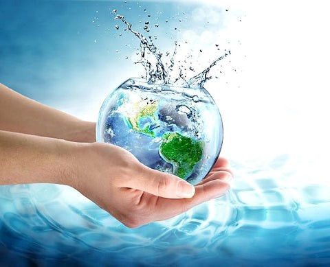
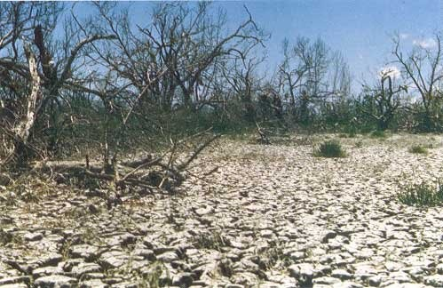
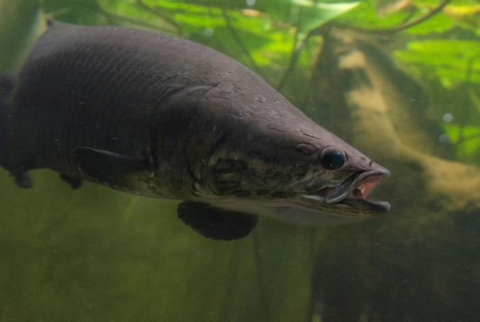
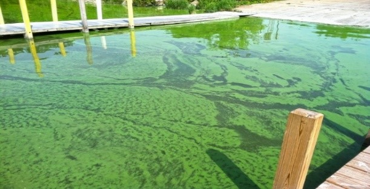

Water Conservation
A guide to water conservation - Saving water and the earth. (n.d.). The Berkey. https://theberkey.com/pages/a-guide-to-water-conservation
The demand for freshwater is increasing, and many scientists predict a future shortage. Water conservation and management, including water quality protection, is a growing field of employment and environmental concern. These efforts involve policies, strategies, and actions to sustainably manage water resources, protect aquatic environments, and meet current and future human needs. Factors like population growth, household size, affluence, and climate change are exacerbating pressures on natural water resources, especially in industrial and agricultural sectors.
Effective water conservation and management offers both economic and environmental benefits. Excessive water use can increase water and sewer bills, overload septic systems and municipal sewer systems, and lead to untreated sewage contamination. By conserving water, we can extend the lifespan of both community and individual sewage systems.
Water In Living Organisms
Water is essential for all life on Earth. As a human, you're primarily composed of water. Learn about its vital functions in your body.
Water is vital for all living things, comprising up to 90% of some organisms' body weight. According to Mitchell and others (1945), in humans, 60% of the adult body is water, with organs like the brain and heart containing even higher percentages.
Daily water needs vary based on age, gender, and location. Adults typically require 3 liters (3.2 quarts) for men and 2.2 liters (2.3 quarts) for women. While drinking liquids is essential, some water is also obtained through food."
Water is essential for life, serving various vital functions:- Building Material: It's a crucial component of every cell.
- Temperature Regulation: Helps maintain body temperature through sweating and respiration.
- Metabolism and Transport: Carries nutrients and waste products throughout the body.
- Waste Elimination: Assists in flushing waste through urination.
- Protection: Acts as a shock absorber for organs like the brain, spinal cord, and fetus.
- Saliva Production: Essential for digestion and oral health.
- Lubrication: Ensures smooth joint movement.
The water in you: What water does for your body | U.S. Geological Survey. (2019, May 22).
https://www.usgs.gov/media/images/water-you-what-water-does-your-bodyWater is known as the 'universal solvent' due to its ability to dissolve more substances than any other liquid. This is crucial for life on Earth, as water carries valuable chemicals, minerals, and nutrients wherever it goes.
Water's unique chemical structure, with a polar arrangement of oxygen and hydrogen atoms, makes it an excellent solvent. This polarity allows water molecules to attract and dissolve a wide range of other compounds, including salt.
Photosynthesis and cellular respiration are interconnected processes essential for life. The products of one serve as the reactants of the other, creating a cycle that sustains life. Notice the reverse relationship between their equations:
Cellular Respiration: C6H12O6 + 6O2 → 6CO2 + 6H2O
Photosynthesis: 6CO2 + 6H2O → C6H12O6 + 6O2
Photosynthesis produces glucose, which is used in cellular respiration to create ATP. This process then converts glucose back into carbon dioxide, which is recycled for photosynthesis. While photosynthesis breaks down water to produce oxygen, cellular respiration combines oxygen with hydrogen to form water. Photosynthesis requires carbon dioxide and releases oxygen, while cellular respiration requires oxygen and releases carbon dioxide. The oxygen released by photosynthesis is used by most organisms for cellular respiration. We breathe in this oxygen, which is transported through our blood to cells. Oxygen is essential for efficient cellular respiration, leading to higher ATP production.
Photosynthesis and cellular respiration are key components of the carbon cycle, the process by which carbon is recycled in the biosphere. Cellular respiration releases carbon dioxide into the environment, while photosynthesis removes it from the atmosphere. This ongoing exchange helps maintain stable levels of atmospheric oxygen and carbon dioxide.
Admin. (2021, February 8). Differences between cellular respiration and photosynthesis. BYJUS.
https://byjus.com/biology/difference-between-photosynthesis-and-respiration/Water in Ecosystems
Ecosystems are biological communities composed of living organisms (biotic elements) and their physical environment (abiotic components). The interactions between these elements define ecosystems and shape natural cycles. Water plays a vital role as the lifeblood of these communities.
Water is the lifeblood of ecosystems, connecting and sustaining all living things. Its primary functions include:- Plant Growth: Water is essential for plant growth and development.
- Habitat: It provides permanent homes for aquatic species and temporary habitats for amphibians, insects, and other organisms.
- Nutrients: Water carries essential nutrients and minerals for survival.
As nature's most important nutrient, water is indispensable for human life.
Water Cycles in Ecosystems
- Evaporation
- Transpiration
- Condensation
- Precipitation
Evaporation occurs when water heats up to its boiling point and transforms into water vapor, rising into the atmosphere. Solar energy warms water, causing it to evaporate. A significant portion of water in clouds originates from the ocean, evaporating and condensing in the upper atmosphere. However, water can also evaporate from soil and other surfaces.
Transpiration, the release of water vapor from plant leaves, accounts for about 10% of the water in the atmosphere. Plant roots absorb water from the soil, and some of this water is released as vapor through tiny openings called stomata during photosynthesis.
Condensation occurs when warm, humid air encounters a cold surface. As the warm air cools, it loses its ability to hold moisture, releasing water droplets onto the cold surface.
Precipitation occurs when water falls back to Earth as rain, hail, or snow. Some of this water evaporates due to surface heat, while another portion infiltrates the soil and becomes groundwater, eventually seeping into rivers, lakes, and oceans. The remaining water, known as runoff, flows into these water bodies, restarting the cycle.
Solutions, K. W. (2024, August 22). Saving the planet’s water nature’s way – through every stage of the water life cycle | Nature’s Pond Care. https://www.naturespondcare.com/educational-blog/thewaterlifecycle.html
Water Scarcity and Its Impact on Species and Habitats
Impacts on land-based wildlife and ecosystemsOn land, droughts have visible consequences, such as parched grasslands, wilting or dry vegetation, and hardened ground. These conditions can severely impact terrestrial ecosystems, native flora, and fauna.
Droughts disrupt entire food webs, limiting nutrition for animals, affecting offspring survival, and altering breeding cycles. This can lead to migration, temporary loss, or even permanent extinction of local species, sometimes replaced by invasive species.
Drought Resilience and Water Conservation | US EPA. (2024, January 11). US EPA. https://www.epa.gov/water-research/drought-resilience-and-water-conservation
Droughts significantly impact freshwater environments. Water levels decline in rivers, lakes, ponds, wetlands, and aquifers, reducing river flows and lake flushing rates. Groundwater-fed streams, like those in southern England, may dry up, fragmenting ecological connectivity.
Lower river levels reduce available habitats, affecting fish, amphibians, molluscs, and macro-invertebrates. Natural events like floods, which trigger migration and spawning, are often missed during prolonged droughts, disrupting animal lifecycles.
Along river and lake edges, habitats are also impacted by declining water levels. Tree cover and vegetation are depleted, affecting flora and fauna. Reduced shading and cooling can degrade plant communities and disrupt fish spawning.
Freshwater threats. (n.d.). Environment. https://www.nationalgeographic.com/environment/article/freshwater-threats
Fish and aquatic insects require adequate dissolved oxygen (DO) for survival. Oxygen is replenished through gas exchange with the atmosphere. During droughts, reduced river flow and turbulence can limit gas exchange, leading to low DO levels. Rising water temperatures further decrease oxygen solubility.
While algal blooms can increase DO levels due to photosynthesis, their collapse can cause rapid DO declines as bacteria consume the algal biomass. This can result in fish kills and localized extinctions.
Algal blooms can block sunlight and halt photosynthesis below the surface. Bolles Harbor, Lake Erie. (Credit: NOAA, public domain)
River flow significantly affects the growth and reproduction of algae. Reduced flow allows algae more time to multiply, leading to blooms. Large algal blooms can harm river ecology, increasing water turbidity, smothering plants, and causing oxygen depletion through bacterial decomposition.
Droughts can alter the timing of algal blooms. Winter droughts may lead to earlier spring blooms, while prolonged summer low flows can cause early termination of diatom and larger algae blooms. Reduced flow prevents these algae from staying suspended, causing them to settle and decay.
High temperatures and low flows can change the algal community, favoring smaller green algae over larger species. These changes impact aquatic organisms that rely on algae as a food source.
Cyanobacteria, a type of blue-green algae, can produce toxins harmful to animals and humans when present in large quantities.
Sustainable Practices in Agriculture and Conservation
Importance of Water Conservation in AgricultureWater conservation in agriculture is essential for preserving limited water resources, mitigating water scarcity, and ensuring sustainable food production. By adopting efficient irrigation methods and water-saving techniques, farmers can optimize water usage, reduce environmental impact, and maintain the long-term viability of agricultural systems.
Different Techniques Used for Water Conservation:- Efficient Water Use in Agriculture
- Drip Irrigation on Farms
- Capturing and Storing Water
- Irrigation Scheduling
- Enhancing Soil Health for Water Conservation
- Compost, Mulch, and Water Conservation
- Dry Farming
- Cover Crops in Water Conservation for Sustainable Farming
- Conservation Tillage
- Optimizing Crop Performance through Water-Smart Practices
- Crop Rotation: Boosting Water Conservation and Soil Health
- Water-Conserving Plants: Increased Water Efficiency
- Rotational Grazing for Enhanced Water Efficiency
Efficient water use in agriculture involves maximizing crop productivity while minimizing water consumption. This includes techniques like capturing and storing water and using drip irrigation to deliver water directly to plant roots, reducing water loss from evaporation or runoff.
Drip irrigation is a highly efficient water conservation method that delivers water directly to plant roots. This minimizes water loss and promotes healthier crops by providing water precisely where it's needed. Drip irrigation also reduces weed growth and disease, as plant foliage remains dry. These customizable systems are a versatile and sustainable solution for water conservation in agriculture.
Water harvesting is a crucial strategy for sustainable agriculture. This technique involves collecting and storing rainwater, surface runoff, or treated wastewater for irrigation. Farmers can use methods like constructing ponds, reservoirs, or tanks to store captured water. During droughts, these stored water sources provide plants with moisture, conserving water and reducing reliance on scarce freshwater resources.
Efficient water use in agriculture includes proper irrigation scheduling, which involves determining the optimal timing and frequency of irrigation based on crop needs, soil moisture, and weather conditions. Using technologies like soil moisture sensors and weather forecasts, farmers can precisely monitor soil moisture and make informed irrigation decisions. This ensures crops receive adequate water without overwatering, improving water-use efficiency and optimizing yields.
Enhancing soil health for water conservation involves improving soil structure, fertility, and moisture-holding capacity. This promotes efficient water use and includes strategies like:"
Compost and mulch are essential for water conservation in agriculture. Compost enhances soil structure, water-holding capacity, and nutrient content, reducing the need for frequent irrigation. Mulch prevents water evaporation and suppresses weeds. Together, compost and mulch promote better water infiltration, conserve moisture, and reduce water requirements.
Dry farming is a technique that relies on natural rainfall and soil moisture without irrigation. It's suitable for regions with limited water resources. Dry farming uses strategies like strategic planting, soil preparation, and drought-tolerant crop selection to encourage root growth and maximize water absorption. This technique emphasizes conserving soil moisture through reduced tillage, mulching, and drought-resistant crops.
Cover crops are non-commercial crops grown to protect and enhance soil between main crop seasons. These crops, like legumes, grasses, or clovers, prevent erosion, improve soil structure, and increase organic matter.
Cover crops are crucial for water conservation, reducing surface runoff, increasing water infiltration, and minimizing soil evaporation. Their extensive root systems enhance soil water-holding capacity and nutrient retention. Incorporating cover crops into crop rotation systems improves soil health, conserves water, and mitigates droughts and heavy rainfall.
Conservation tillage practices minimize soil disturbance during planting and cultivation, preserving soil structure, organic matter, and beneficial organisms. This practice improves water conservation by enhancing soil infiltration and reducing erosion. Undisturbed soil acts as a natural barrier, preventing water runoff and promoting water retention in the root zone. Conservation tillage reduces water use and contributes to improved soil health and nutrient cycling.
Optimizing crop performance through water-smart practices involves strategies that enhance water use efficiency and maximize crop productivity. These techniques include:
Crop rotation involves growing different crops in a specific sequence on the same land. This technique offers benefits like optimizing crop performance and water use efficiency. By alternating water-demanding crops with drought-tolerant ones, soil moisture can replenish during periods of lower water demand. Crop rotation also helps break pest and disease cycles, reducing the need for chemicals and improving crop health.
Planting water-conserving plants is another approach to optimizing crop performance and water efficiency. These plants are specifically selected or bred to thrive in water-limited conditions. They have developed mechanisms like deep root systems, reduced transpiration rates, or efficient water uptake to withstand droughts. Incorporating water-conserving plants into agricultural practices optimizes water usage and offers benefits like mitigating the impacts of climate change, including increased water variability and unpredictable weather patterns.
Rotational grazing is a sustainable livestock management practice that involves systematically moving livestock between different grazing areas. This technique improves soil health and contributes to water conservation by allowing pastures to rest and recover, promoting plant growth and deep root development. Increased vegetation cover from rotational grazing reduces soil erosion and water runoff, allowing more water to infiltrate and be retained in the soil.
Rotational grazing also effectively manages livestock impact, preventing overgrazing and maintaining consistent ground cover. This reduces the risk of soil compaction and enhances water absorption. By supporting healthier soil and improving water-holding capacity, rotational grazing helps create a more resilient farming system, better equipped to handle water scarcity and sustain long-term agricultural productivity."
References
Introduction – Water Conservation and Management (WCM). (n.d.).
https://www.watconman.org/introduction/#:~:text=Water%20conservation%20and%20management%20encompasses,how%20much%20water%20is%20used.The water in you: water and the human body | U.S. Geological Survey. (2019, October 22).
https://www.usgs.gov/special-topics/water-science-school/science/water-you-water-and-human-body#:~:text=Water%20is%20of%20major%20importance,lungs%20are%20about%2083%25%20water.The water in you: What water does for your body | U.S. Geological Survey. (2019, May 22).
https://www.usgs.gov/media/images/water-you-what-water-does-your-bodyA guide to water conservation - Saving water and the earth. (n.d.-a). The Berkey.
https://theberkey.com/pages/a-guide-to-water-conservationWater, the universal solvent. (n.d.).
https://www.labxchange.org/library/items/lb:LabXchange:b8e3583f:html:1#:~:text=Water%20is%20called%20the%20%22universal,every%20living%20thing%20on%20earth.CK-12 Foundation. (n.d.). CK-12 Foundation.
https://flexbooks.ck12.org/cbook/ck-12-middle-school-life-science-2.0/section/2.17/primary/lesson/connecting-cellular-respiration-and-photosynthesis-ms-ls/Admin. (2021, February 8). Differences between cellular respiration and photosynthesis. BYJUS.
https://byjus.com/biology/difference-between-photosynthesis-and-respiration/Role of water in the ecosystem. (2019, November 15). Sciencing.
https://sciencing.com/role-water-ecosystem-5444202.htmlSolutions, K. W. (2024, August 22). Saving the planet’s water nature’s way – through every stage of the water life cycle | Nature’s Pond Care.
https://www.naturespondcare.com/educational-blog/thewaterlifecycle.htmlDrought Resilience and Water Conservation | US EPA. (2024, January 11). US EPA.
https://www.epa.gov/water-research/drought-resilience-and-water-conservationThe impacts of drought on water quality and wildlife. (n.d.). UK Centre for Ecology & Hydrology.
https://www.ceh.ac.uk/news-and-media/blogs/impacts-drought-water-quality-and-wildlifeSciences, V. L. (2024, October 2). Water conservation in agriculture. Verdesian Life Sciences.
https://vlsci.com/blog/water-conservation-in-agriculture/#:~:text=Capturing%20and%20storing%20water%20is,for%20later%20use%20in%20irrigation.